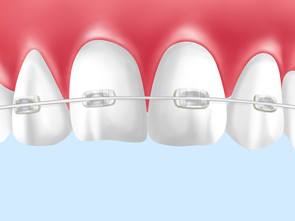

口元の美しさと健康のために
～矯正歯科～
「出っ歯」や「すきっ歯」、「受け口」など歯並びの乱れでお悩みではありませんか？ 三島駅・下土狩駅近くの歯医者「MI総合歯科クリニック」にお気軽にご相談ください。矯正歯科治療で歯並びを整えます。乱れた歯並びは見た目のコンプレックスにつながるだけでなく、身体のバランスや健康にも悪影響を与える可能性を秘めています。大人の矯正治療も小児矯正にも対応しますので、お気軽にお問い合わせください。
歯並びの悪さが引き起こすデメリット
歯並びの悪さは見た目だけでなく、心身ともにさまざまな悪影響をおよぼす可能性があります。リスクを挙げてみますのでご覧ください。
- 歯と歯のすき間に食べ物のカスが詰まりやすく、ブラッシングもしにくいので虫歯や歯周病のリスクが高まる
- 食べ物をしっかり咬めないため、胃腸に負担がかかり、栄養吸収の悪さから体調に悪影響がおよびやすい
- 咬み合わせの悪さが全身に影響し、骨格のゆがみなどを生み、肩こりや腰痛などを引き起こす可能性がある
- 歯のすき間などから空気が漏れ、クリアな発音ができなり、そのせいで会話が苦手になる
- 歯並びの悪さがコンプレックスとなり、人前で大きく口を開けて笑うのをためらい、気持ちが内向きとなる
矯正歯科治療を行う歯科医師のご紹介
菊田 純（きくた じゅん）

略歴
| 2011年 | 日本矯正歯科学会会員 |
|---|---|
| 2011年 | 東京矯正歯科学会会員 |
| 2015年 | 日本大学大学院博士課程修了 |
| 2016年 | 日本矯正歯科学会認定医取得 |
| 2020年 | 日本矯正歯科学会臨床指導医（旧専門医）取得 |
疋田 拓史（ひきだ たくじ）

略歴
| 2012年 | 日本矯正歯科学会会員 |
|---|---|
| 2012年 | 東京矯正歯科学会会員 |
| 2016年 | 日本大学大学院博士課程修了 |
| 2018年 | 日本矯正歯科学会認定医取得 |
何歳からでも開始できます～大人の矯正歯科治療～
「矯正治療は子どもがするもの」というイメージをお持ちかもしれません。しかし、大人になってからでも乱れた歯並びは治療できます。すでに骨格が完成している大人だからこそのメリットもありますので、ご興味のある方はお気軽にご相談ください。
大人の矯正のメリット
- 自分の意志で治療に臨むため効率的に進められる
- あごの成長が終わっているからこそ計画的に治療ができる
- 自分の歯を使って咬み合わせを再構成できる
大人の矯正治療装置
メタルブラケット
一般的な矯正装置です。ほとんどの症状に使用できる対応性の高さや強い矯正力が特徴で、比較的予算も低めです。ただし、装置が金属でできているため目立ちやすいというデメリットがあります。
セラミックブラケット

仕組みや効果はメタルブラケットとほぼ同様ですが、ブラケット部分に白いセラミック素材を使用しているため、目立ちにくいのがメリットです。
マウスピース型矯正装置
透明な樹脂製のマウスピースを使った矯正装置です。ブラケット自体が透明で薄いので、近くから見てもほとんど装置が目立ちません。また、取り外しが可能なのでお食事やブラッシングの邪魔になりません。
3歳から治療をはじめます～小児矯正～
子どもの矯正には、「咬合誘導治療」という方法が一般的に用いられます。これはあごや骨が成長する力を利用して治療効果を得る方法です。おもに混合歯列期と呼ばれる、歯の生え替わり時期にスタートします。
咬合誘導治療のメリット
- 上下のあごの骨の位置改善に効果的
- 将来的な矯正治療の際に、抜歯を避けられる可能性が高まる
- 歯周病のリスク減少に期待が持てる
子どもの矯正治療装置
床矯正
床矯正は、あごの骨を拡げて歯が生えそろうスペースを確保するための矯正装置です。取り外しが可能なので、お子さんの負担も軽減できます。
歯列矯正用咬合誘導装置（プレオルソ）
やわらかい素材なので装着感がよく、また歯型を採取する必要もないため、小さなお子さんでも安心してはじめられる矯正装置です。熱を加えて自由に変形できるので、従来の矯正装置に比べて調整が簡単です。
PICKUP矯正治療と一緒に行うMFT（口腔筋機能療法）
当院では矯正治療と並行し、MFTと呼ばれるお口まわりの筋肉トレーニングを行っております。特殊な器具などを用い、舌・唇・頬などの筋肉を鍛えて舌の位置を正常に戻し、歯列の乱れの改善を促します。また、歯並びの後戻り防止にも有効です。食べ物を正しく咬んだり、飲み込んだり、クリアな発音をしたりするのに効果的ですので、矯正治療と併せてご活用ください。